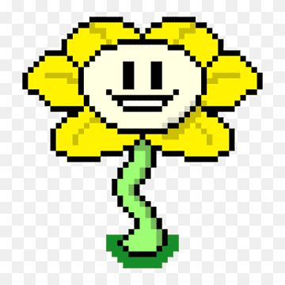
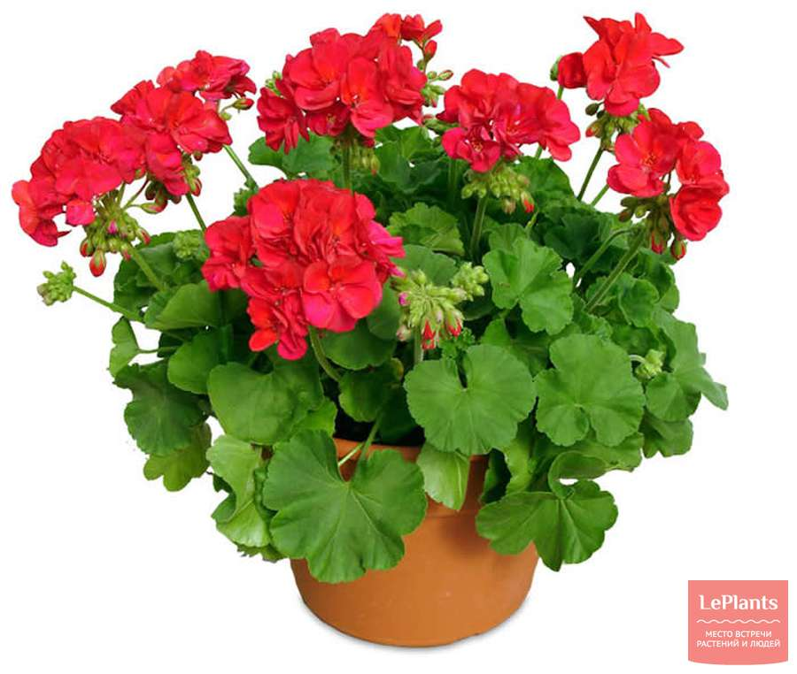

Flowey
Это любимый цветок соего брата, я его не люблю.
Вот, можете полюбоваться на него на картинке ниже.
Флауи (англ. Flowey) — это первый ключевой персонаж, с которым сталкивается протагонист в Undertale. Флауи является главным антагонистом на Нейтральном и Истинном Пацифистском пути, и его можно считать дейтерагонистом на пути Геноцида.
Герань
Терпеть не могу герань, она вонючая и очень нравится моей маме.
Ещё у неё противные мохнатые листья. Отвратительно.
На этом, собственно, всё.